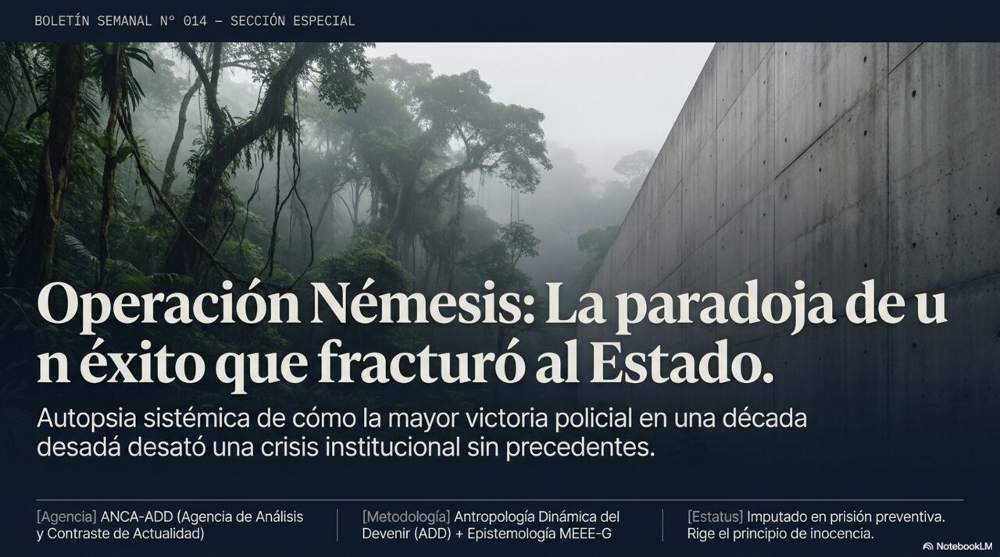

OPERACIÓN
NÉMESIS
Cómo la mayor victoria policial en una década terminó siendo la peor pelea entre poderes del Estado en años

Estimado lector, estimada lectora:
El 24 de julio, la policía capturó al fugitivo más buscado de Costa Rica, un hombre conocido como alias «Diablo». Todos los actores políticos lo celebraron. Y sin embargo, siete días después, ese mismo éxito había desatado la pelea más dura entre poderes del Estado en años, con la presidenta acusando de «golpistas» a magistrados de la Sala Constitucional. Un lector nos hizo, sobre esto, la pregunta que le da título a este informe:
¿Cómo es posible que atrapar al criminal más buscado del país haya terminado fracturando al Estado que lo atrapó?
No es una pregunta policial. Es una pregunta sobre cómo funcionan por dentro las instituciones. Antes de responderla, una aclaración necesaria: nada de lo que sigue es un juicio de culpabilidad. Hay un imputado en prisión preventiva, no una persona condenada. Vamos por partes.
— El equipo de ANCA-ADD
En este especial
¿Qué es lo que realmente vamos a contar aquí?
no es la historia de un hombre: es la historia de por qué un éxito se convirtió en crisisLa crónica policial de la Operación Némesis ya está ampliamente cubierta por la prensa nacional: quién es el detenido, cómo fue el operativo, qué le espera en el proceso penal. Repetir eso no le agregaría nada. Lo que este informe hace distinto es correr el foco: en vez de preguntar «¿qué hizo este hombre?», pregunta «¿por qué un resultado que todos los poderes del Estado declararon deseable produjo, en menos de siete días, ruptura en lugar de celebración compartida?». Esa pregunta no es sobre un criminal: es sobre cómo procesan la realidad las instituciones.
Alejandro Arias Monge, el hombre conocido como «Diablo», es un imputado en prisión preventiva. No existe condena en firme en ninguna causa. Todo lo que en este texto se le atribuye es una imputación de las autoridades o una línea de investigación, nunca un hecho probado en juicio. Rige plenamente la presunción de inocencia — y esa distinción no es un formalismo: es lo que separa a un Estado de derecho de su simulación.
¿Quién es alias «Diablo» y cómo llegó hasta acá?
no llegó de golpe: fue una acumulación lenta, paso a paso, durante más de una décadaAlejandro Arias Monge nació en 1984 en Pococí, Limón, y empezó su vida laboral en compañías bananeras. Su historial con las autoridades no arrancó con narcotráfico a gran escala: creció por etapas, y esa forma de crecer importa para entender lo que viene más adelante en este informe.
- Desde 2010: empieza a ser vinculado con asaltos y robos de camiones, agroquímicos y ganado.
- 2015: es señalado como sospechoso de un homicidio. Los hechos por los que hoy está en prisión preventiva —dos homicidios y una tentativa, bajo la modalidad de sicariato— son de este año.
- 2016: pasa un año detenido, y al salir se le vincula a una guerra armada contra otra organización de la zona.
- 2019 en adelante: queda prófugo. El OIJ intenta capturarlo varias veces sin éxito, incluyendo un operativo en 2023 en el que estuvo a pocos metros de lograrlo.
- 2020: se difunden audios atribuidos a su organización ofreciendo dinero por matar policías. Empieza también a mostrar armamento pesado en redes sociales.
- 2023: se le vincula con el control de la lotería clandestina en Limón y con financiar minería ilegal de oro.
- Mayo de 2025: Costa Rica reforma su Constitución para permitir, por primera vez, extraditar costarricenses por narcotráfico. Días después, Estados Unidos ofrece 500.000 dólares por su captura.
- 24 de julio de 2026: Operación Némesis. Es capturado.
Esta no es la trayectoria de alguien que llegó de otro país con una organización ya armada. Es más parecida a una bola de nieve que empieza pequeña en la parte alta de una loma y va creciendo a medida que baja: primero robos menores, después violencia, después dinero, después una red que combina varios negocios distintos. Entender esa forma de crecimiento —lenta, diversificada, local— es clave para lo que se explica en la Parte 5: por qué quitarle la cabeza a esa bola de nieve no la detiene de inmediato.
¿Qué pasó la madrugada de la captura?
cincuenta minutos de tiroteo, y siete días que cambiaron la conversación nacionalA las 5:00 a.m. del viernes 24 de julio, tres unidades especializadas del OIJ (el equipo táctico SERT, la unidad de vigilancia UVISE y la oficina contra el crimen organizado OECDO) irrumpieron en una propiedad de Río Frío de Sarapiquí, cerca de la frontera con Nicaragua. Según el OIJ, el enfrentamiento duró cerca de 50 minutos y se intercambiaron más de 2.500 disparos. Ocho agentes resultaron heridos, un presunto integrante de la organización murió, y fueron detenidos Arias Monge y un supuesto lugarteniente conocido como «Tan».
Siete días que lo cambiaron todo
Lo que siguió a la captura es, en realidad, el corazón de este informe. Se lo presentamos como línea de tiempo, porque el orden en que ocurrió cada cosa es justo lo que explica cómo se llegó de la felicitación al «golpe de Estado».
- 24 jul: la presidenta felicita al OIJ («honor a quien honor merece»), pero en la misma comparecencia dice que el recorte de presupuesto al Poder Judicial es «pequeño». El mismo día, el director del OIJ es informado de un recorte adicional y lo reclama públicamente.
- 24-25 jul: el ministro de Hacienda responde: «no me da lástima», y llama al reclamo «oportunista» y «convenienciero».
- 25 jul: la hija del detenido es ubicada armada cerca de la cárcel; se aclara luego que tenía permiso de portación y fue liberada.
- 27 jul: Arias Monge es trasladado de madrugada para una audiencia; el fiscal general explica después que fue por una reunión con agentes de la DEA. Un tribunal ordena prisión preventiva.
- 27-28 jul: la presidenta cuestiona el manejo judicial del traslado y dice que un plazo corto «sería jugar con la vida de los costarricenses».
- 29 jul: un diputado oficialista llama a la captura «chiripazo» y advierte que la Asamblea no aprobará más presupuesto al Poder Judicial si siguen las decisiones que el Gobierno cuestiona.
- 30-31 jul: la Sala Constitucional dicta una sentencia sobre magistrados suplentes; la presidenta llama «golpistas» a cuatro magistrados; la Asamblea anuncia querella penal contra ellos.
Que la crisis constitucional haya venido justo después de la captura no prueba que una causó la otra. El pleito por el presupuesto judicial y el bloqueo de los magistrados venían de meses atrás, con su propia lógica. Lo que sí puede decirse es que la captura funcionó como acelerador: metió, en medio de un conflicto que ya existía, un ingrediente nuevo que reorganizó los incentivos de todos los que participaban en él. Eso se explica en la siguiente parte.
¿Por qué un éxito que todos festejaron terminó en pelea?
la pregunta que le da título a este informe — y tiene una respuesta precisaAquí está la clave de todo. Dos instituciones —el Poder Judicial y el Poder Ejecutivo— vivieron exactamente el mismo hecho, la captura, pero cada una lo procesó según su propio problema del momento. Y por eso terminaron hablando de cosas distintas sin darse cuenta.
⚖️ Para el Poder Judicial
- Su problema del momento: escasez de recursos frente a organizaciones criminales cada vez mejor armadas.
- Cómo lee la captura: «esto prueba que funcionamos, y que necesitamos más apoyo» —de ahí el reclamo del casco faltante.
🏛️ Para el Poder Ejecutivo
- Su problema del momento: demostrar que el ajuste fiscal no compromete la seguridad, y que la conducción de la lucha contra el crimen es suya.
- Cómo lee la captura: «un actor con quien peleamos por presupuesto acaba de ganar un argumento a su favor» —de ahí la secuencia de felicitación, luego relativización, luego cuestionamiento.
Imagínese dos personas mirando la misma fotografía a través de anteojos de colores distintos: una la ve roja, la otra la ve azul. Ninguna miente sobre lo que ve —de verdad ve ese color—, pero ninguna está reaccionando a la foto en sí: está reaccionando a lo que sus propios anteojos le muestran. Eso es lo que pasó entre estos dos poderes. Ninguno respondió al otro: cada uno respondió a lo que su propia lógica interna necesitaba en ese momento. Por eso subir el tono no resuelve nada: no es un problema de que no se estén escuchando, es que están viendo colores distintos.
Hay un dato que casi no aparece en la discusión pública: las comunidades de Pococí, Guácimo, Cariari, Río Frío y Sarapiquí, que convivieron dieciséis años con esta organización y pusieron la mayoría de las víctimas, no tienen voz en ninguna de las coberturas de este caso. Aparecen como escenario —«los vecinos escucharon el tiroteo»— y como beneficiarias, nunca como alguien a quien se le pregunta algo. Ese silencio no es casualidad: es parte de cómo se cuenta habitualmente la seguridad en Costa Rica.
¿Qué pasa con la organización ahora que su líder está preso?
quitarle la cabeza a una red descentralizada no la destruye: le quita quien resolvía los pleitos internosLa organización atribuida a «Diablo» no funcionaba como una pirámide con un solo jefe dando órdenes de arriba hacia abajo. Era una red repartida en varios negocios —narcotráfico, robo de ganado, lotería clandestina, minería ilegal— construida durante dieciséis años. Y eso cambia por completo lo que se puede esperar tras la captura.
Quitarle el nodo más visible a una red descentralizada no la desarma: le quita el mecanismo que resolvía las disputas internas. Es distinto a decapitar una empresa con un solo dueño. Aquí, varios subordinados que antes obedecían a una misma cabeza pueden empezar, de un día para otro, a competir entre ellos por el mismo territorio y las mismas rentas.
Hay además un dato curioso y preocupante: está documentado que otros delincuentes, sin pertenecer siquiera a la organización, usaban el nombre «Diablo» para extorsionar comerciantes, solo por el miedo que generaba ese apodo. Eso significa que el nombre, como marca de terror, ya funcionaba por su cuenta, casi independiente de la persona. La captura no borra ese miedo de un día para otro: abre una disputa por quién puede seguir usándolo.
Limón y el norte de Heredia son quienes primero sentirían cualquier reorganización violenta. La tendencia nacional de homicidios venía bajando, pero eso esconde que la violencia se concentra fuerte en ciertas zonas. Hay además un dato que preocupa más a futuro que el crimen mismo: el OIJ anunció que investiga a funcionarios policiales presuntamente vinculados a la organización. Si se confirma, el golpe a la confianza en esas comunidades sería más duradero que el causado por la propia organización criminal.
Se fragmenta con violencia: distintos grupos pelean por el territorio que quedó libre. Es lo más frecuente quando se remueve un liderazgo en redes de este tipo.
Sigue funcionando a control remoto: la organización se sostiene con segundos al mando o con instrucciones desde la cárcel.
Otra red la absorbe: una estructura distinta, local o vinculada a redes de otros países, ocupa el espacio sin pelea prolongada.
¿Por qué Costa Rica se volvió una ruta clave de la droga?
el país superó a México como principal punto de trasbordo hacia el norte — y no es casualidad geográficaCosta Rica funciona, en la ruta de la cocaína, como punto de trasbordo entre la producción sudamericana y el consumo en Estados Unidos y Europa. Según datos citados en este informe, el país superó a México desde 2020 como principal punto de tránsito hacia esos destinos. Los decomisos se cuadruplicaron en el primer trimestre de 2026, de 3 a 12 toneladas.
El valor de la droga se realiza donde se vende, no donde pasa. Lo que se queda en el país que sirve de ruta es el costo: los homicidios, la corrupción, el gasto en seguridad.
Ese es el punto que un análisis puramente policial no suele mostrar. La ganancia real del negocio se hace en el mercado final, en Estados Unidos o Europa. Lo que Costa Rica carga, en cambio, es el costo de que la mercancía pase por acá: el gasto en seguridad del país pasó de 425 millones de dólares en 2020 a un presupuesto proyectado de 720 millones para 2026.
Estados Unidos ofreció 500.000 dólares por la captura de «Diablo». Suena generoso, pero funciona también como un mecanismo que traslada el costo y el riesgo de atraparlo a la policía costarricense, mientras el beneficio principal —cortar una ruta hacia el mercado estadounidense— se cosecha fuera del país. Ocho agentes heridos y un tiroteo de 50 minutos son el costo real de una operación cuyo mayor beneficiario está afuera.
Hay algo más: en mayo de 2025, Costa Rica reformó su Constitución para permitir, por primera vez en su historia, extraditar a sus propios ciudadanos —antes prohibido por más de un siglo—, y solo por narcotráfico o terrorismo. Es, literalmente, ceder una parte de la soberanía —el derecho de juzgar a los propios— como condición para cooperar en esta cadena internacional.
¿Y ahora qué?
los caminos posibles del conflicto entre poderes, y las preguntas que todavía no tienen respuestaAdemás de lo que pueda pasar con la red criminal (Parte 5), queda abierto el otro eje de esta historia: el pleito entre poderes del Estado.
Se destraba: se giran los recursos retenidos, la Asamblea elige a los magistrados suplentes, y la querella pierde fuerza.
Se judicializa a fondo: el conflicto migra por completo a instancias formales —recursos, querellas— y se congela sin resolverse políticamente.
Se cruza una línea: algún poder declara abiertamente que no va a reconocer una decisión del otro, o el OIJ suspende funciones por falta de presupuesto.
No es la más dramática de cada lista por separado: es que la red criminal se fragmente con violencia justo cuando el conflicto presupuestario deja a la policía con menos capacidad para investigar. Ese cruce —crimen reorganizándose mientras la respuesta del Estado está congelada por un pleito interno— es el escenario que más debería preocupar.
Lo que todavía queda en el aire
preguntas honestas, que nadie puede responder aún con certeza- ¿Se reorganizará violentamente la estructura, o seguirá funcionando bajo dirección delegada?
- ¿Cuántos policías están bajo investigación por presunta colaboración con la organización?
- ¿Pedirá Estados Unidos la extradición? El obstáculo es que los hechos que sostienen las causas son de 2015, antes de que existiera esa posibilidad legal.
- ¿Se girarán los recursos presupuestarios retenidos al Poder Judicial?
- ¿Prosperará la querella por prevaricato contra los cuatro magistrados?
- ¿Qué pasó exactamente durante el enfrentamiento armado, incluida la muerte del tercer detenido?
Una palabra sobre cómo trabajamos. Detrás de este resumen en palabras sencillas hay un informe técnico bastante más detallado, donde clasificamos qué tan confiable es cada dato, analizamos cómo se conectan los hechos entre sí y ubicamos a Costa Rica en el mapa mundial del narcotráfico. Esa versión completa también está disponible para quien quiera ir más al fondo.
Esta edición nace de una convicción sencilla: entender el mundo no debería ser un privilegio de unos pocos. Por eso contamos hasta los temas más delicados con calma y sin palabras complicadas, pero sin recortarle la verdad a nadie —porque tratar a alguien como capaz de comprender es la forma más honesta de respetarlo.
Y, como siempre: rige la presunción de inocencia. Esto es análisis para ayudarle a pensar, no un veredicto ni una bola de cristal.